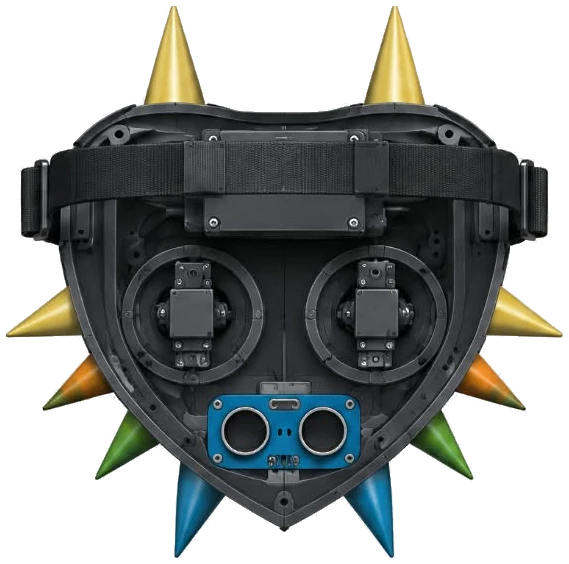
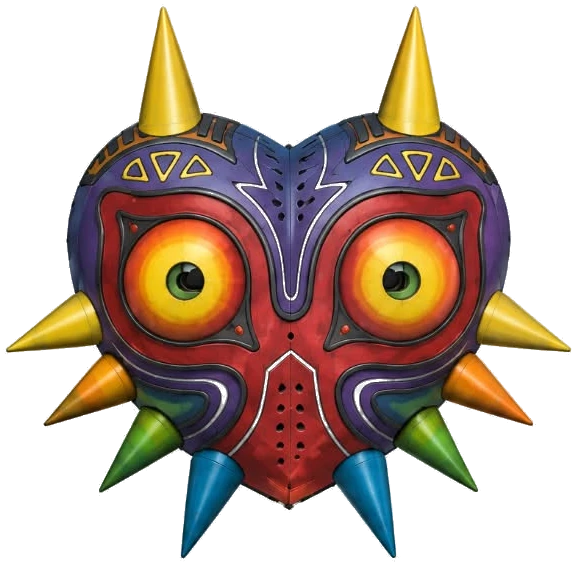

ESP32
ESP32
Controla la máquina de estados y coordina los actuadores.
GPIO DIGITALESUN OBJETO. CUATRO ESTADOS. UNA PRESENCIA.
Una máscara que percibe lo que ocurre a su alrededor. Cuando alguien se acerca, despierta. Cuando la distancia desaparece, algo cambia.
La propuesta transforma la Máscara de Majora en un prop de cosplay interactivo.
La máscara interpreta la presencia de una persona frente al usuario y modifica su comportamiento mediante el movimiento de los ojos. Los estados deben reconocerse visualmente, sin depender de una pantalla ni de una explicación verbal.
La máscara no permanece estática:
interpreta la cercanía.
Desliza la distancia o elige un estado para ver cómo reaccionan los ojos de la máscara.
SELECCIONA UN ESTADO
No detecta a nadie. Los ojos permanecen en posición neutra y la máscara parece inactiva.
Simulación visual conceptual · No está conectada al sensor físico.
Un sistema compacto traduce la distancia en movimiento. El sensor detecta, el ESP32 interpreta y los servos ejecutan.
Controla la máquina de estados y coordina los actuadores.
GPIO DIGITALESMide la distancia de una persona frente a la máscara.
TRIG 05 / ECHO 18Ubicados detrás de los ojos, producen el movimiento visible.
GPIO 13 / GPIO 12GPIO + alimentaciónTRIG→5 · ECHO→18 · GNDSeñal→GPIO 13Señal→GPIO 12Batería fijada · GND común#include <ESP32Servo.h>
Servo ojoIzq, ojoDer;
const int TRIG = 5, ECHO = 18, SERVO_IZQ = 13, SERVO_DER = 12;
enum Estado { DORMIDA, DESPERTAR, POSESION, CALMA };
Estado estado = DORMIDA;
unsigned long ultimaDeteccion = 0;
float medirDistancia() {
digitalWrite(TRIG, LOW); delayMicroseconds(2);
digitalWrite(TRIG, HIGH); delayMicroseconds(10);
digitalWrite(TRIG, LOW);
long t = pulseIn(ECHO, HIGH, 30000);
if (t == 0) return -1; // lectura inválida
return t * 0.0343 / 2.0;
}
void ponerDormida() { ojoIzq.write(90); ojoDer.write(90); }
void ponerDespertar() { ojoIzq.write(65); ojoDer.write(115); }
void ponerPosesion() { ojoIzq.write(45); ojoDer.write(135); }
void loop() {
float d = medirDistancia();
if (d < 0) { estado = DORMIDA; ponerDormida(); delay(100); return; }
if (d <= 30) { estado = POSESION; ultimaDeteccion = millis(); ponerPosesion(); }
else if (d <= 80) { estado = DESPERTAR; ultimaDeteccion = millis(); ponerDespertar(); }
else if (millis() - ultimaDeteccion >= 5000) { estado = CALMA; ponerDormida(); estado = DORMIDA; }
delay(100);
}NOTA DE IMPLEMENTACIÓN Verificar la alimentación de los servos y la compatibilidad de niveles del pin ECHO del HC-SR04 con el ESP32. Mantener GND común.
ANATOMÍA / VISTA INTERNA
Desplázate para recorrer la estructura.

Cuatro vistas del modelo: forma principal, puntas, ojos y una estructura posterior que aloja los componentes. Explóralas y toca los puntos.

01 Evitar puntas expuestas y bordes cortantes cerca del rostro.
02 Fijar servos, cables y batería para evitar elementos sueltos.
03 Mantener libre el campo de visión del usuario.
04 Distribuir el peso con una sujeción posterior ajustable.
05 Aislar los componentes electrónicos de la piel.
06 Permitir ponerse y retirarse la máscara rápidamente.
Validar medidas reales del modelo en Blender y colocarlo sobre una cabeza a escala.
Definir el mecanismo de cada ojo y comprobar el recorrido de los servos.
Montar la simulación en Wokwi y verificar las transiciones de estado.
Capturar la simulación funcionando.
Ajustar los umbrales de distancia y el tiempo de retorno.
Documentar el montaje final y preparar la versión física.
EL PROYECTO CONTINÚA
Validar el modelo, comprobar los mecanismos, montar la simulación en Wokwi y documentar el prototipo físico.
VOLVER AL INICIO ↑